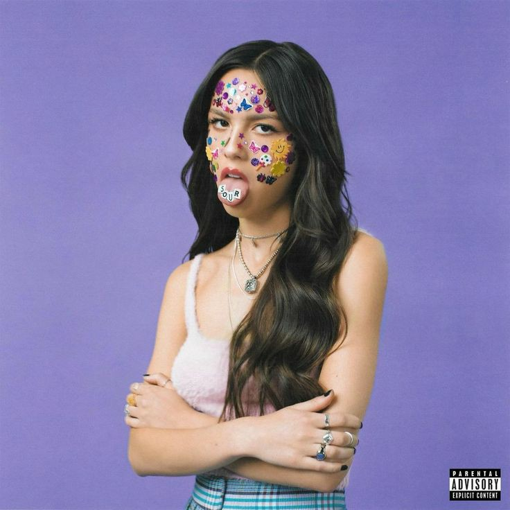

Trayectoria musical
Rodrigo ha logrado tres sencillos número uno en Billboard Hot 100 y dos álbum número uno en Billboard 200; así como cinco certificaciones multiplatino de la Recording Industry Association of America (RIAA). Además de otros reconocimientos, ha ganado un premio American Music, siete premios Billboard Music, cuatro premios MTV Video Music y tres premios Grammy. En 2021, la revista Time la nombró artista del año y Billboard la nombró mujer del año en 2022.
Album más reconocido

- Brutal
- Traitor
- Drivers License
- Deja Vu
- Good 4 U
- Enough For You
- Happier
- Jealousy, Jealousy
- Favorite Crime
- Hope Ur Ok